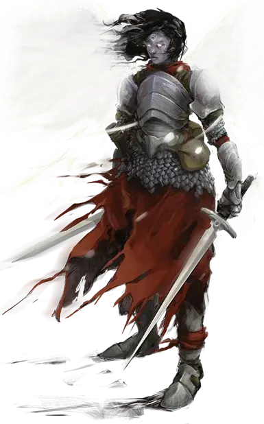

Аасимар
Aasimar

Независимо от того, произошли ли они от небожителя или наделены силой небес, аасимары - смертные, которые несут в своих душах искру Внешних Планов. Они могут разжечь эту искру, чтобы принести свет, излечить раны и высвободить ярость небес.
Аасимар может возникнуть среди любой группы смертных. Они похожи на своих родителей, но живут до 160 лет и часто имеют черты, которые указывают на их небесное наследие. Они часто возникают незаметно и становятся более выраженными, когда аасимар обретает способность демонстрировать свою небесную природу. В таблице "Небесные особенности аасимара" предложены примеры, которые вы можете выбрать или использовать в качестве вдохновения для создания своих собственных.
Небесные особенности аасимара
| к6 | Небесные особенности |
| 1 | Россыпь металлических, белых или угольных веснушек |
| 2 | Металлические, светящиеся или тёмные глаза |
| 3 | Ярко окрашенные волосы |
| 4 | Ваша тень имеет необычный оттенок |
| 5 | Призрачный ореол, венчающий вашу голову |
| 6 | Радуга, сверкающая на вашей коже |
ОСОБЕННОСТИ Аасимара
Вы обладаете следующими особенностями.
Увеличение характеристик. Либо значение одной характеристики по вашему выбору увеличивается на 2, а другой — на 1, либо значение трёх различных характеристик по вашему выбору увеличивается на 1.
Возраст. Аасимары могут жить до 160 лет.
Скорость. Ваша базовая скорость ходьбы — 30 футов.
Вид существа. Вы — Гуманоид.
Размер. Ваш размер — Маленький или Средний. Вы выбираете его при создании персонажа.
Небесное сопротивление. У вас есть сопротивление урону излучением и некротической энергией.
Тёмное зрение. На расстоянии в 60 футов вы при тусклом освещении можете видеть так, как будто это яркое освещение, и в темноте так, как будто это тусклое освещение. В темноте вы не можете различать цвета, только оттенки серого.
Исцеляющие руки. Действием вы можете коснуться существа и бросить количество к4, равное вашему бонусу мастерства. Существо восстанавливает количество хитов, равное общему выпавшему значению. Как только вы воспользуетесь этой особенностью, вы не можете использовать её снова, пока не закончите продолжительный отдых.
Несущий свет. Вам известен заговор свет [light]. Базовой характеристикой для его использования является Харизма.
Небесное откровение. При достижении 3-го уровня, выберите один из приведенных ниже вариантов откровения. После этого вы можете использовать бонусное действие, чтобы высвободить небесную энергию внутри себя, получая преимущества выбранного откровения. Ваша трансформация длится 1 минуту или до тех пор, пока вы не окончите её бонусным действием. После того, как вы используете эту особенность, вы не можете использовать её снова, пока не закончите продолжительный отдых.
- Саван смерти. Ваши глаза на мгновение превращаются в бездну тьмы, и призрачные, не способные взлететь крылья вырастают у вас за спиной. Существа, не являющиеся вашими союзником в пределах 10 футов от вас, которые могут вас видеть должны преуспеть в спасброске Харизмы (Сл 8 + ваш бонус мастерства + ваш модификатор Харизмы) или станут испуганными вами до конца вашего следующего хода. Пока трансформация не закончится, раз в свой ход вы можете нанести дополнительный урон некротической энергией одной цели, когда вы наносите ей урон атакой или заклинанием. Дополнительный урон равен вашему бонусу мастерства.
- Испускание сияния. Испепеляющий свет временно изливается из ваших глаз и рта. В течение всего времени трансформации вы излучаете яркий свет в радиусе 10 футов и тусклый свет ещё на 10 футов, и в конце каждого вашего хода, каждое существо в пределах 10 футов от вас получает урон излучением, равный вашему бонусу мастерства. Пока трансформация не закончится, раз в свой ход вы можете нанести дополнительный урон излучением одной цели, когда вы наносите ему урон атакой или заклинанием. Дополнительный урон равен вашему бонусу мастерства.
- Сияющая душа. Два светящихся, бестелесных крыла временно вырастают у вас за спиной. Пока трансформация не закончится, вы получаете скорость полёта равную скорости ходьбы и раз в свой ход вы можете нанести дополнительный урон излучением одной цели, когда вы наносите ей урон атакой или заклинанием. Дополнительный урон равен вашему бонусу мастерства.
Языки. Ваш персонаж может говорить, читать и писать на Общем и ещё одном языке, который по вашему мнению подходит для персонажа.